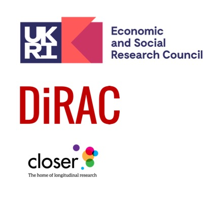

The Team
Bringing together expertise in data management, metadata and machine learning
- Suparna De - University of Surrey (Co-Investigator)
- Sanaz Jabbari - UCL, RITS (Developer)
- Jon Johnson - UCL, CLOSER (Co-Investigator)
- Jenny Li - UCL, CLOSER (Data Management)
- Harry Moss - UCL, RITS (Developer)
The Advisory Board
Providing expert advice to the project
- Ciara Cummins (Central Statistical Office, Ireland)
- Neil Fitzgerald (British Library)
- Deirdre Lungley (UK Data Archive)
- Klaus Moessner (Technical University Chemnitz & University of Surrey)
- Carsten Thiel (Consortium of European Social Science Data Archives)
- Wei Wang (Xian Jiatong Liverpool University)
- Jeremy Yates (UCL)
Contact Us
Metadata Automation Project
Our Funders
